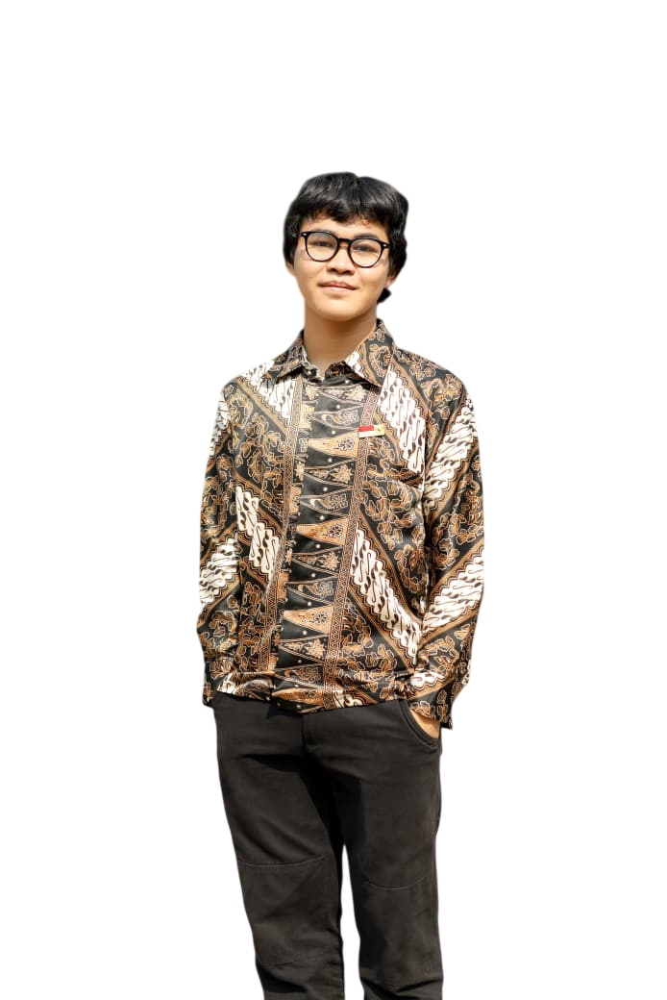

Full Stack App
Full Stack App
Sistem Pemesanan Makanan Berbasis Web
Refaktor codebase dari PHP Native ke Next.js 16 & React 19. Dilengkapi autentikasi JWT, RBAC Middleware, Live Invoice Panel, katalog interaktif, dan Prisma ORM dengan MySQL.
Halo, Saya Muhammad Fahmi Alfarizi — Full Stack Web Developer yang berfokus pada pembangunan sistem informasi, aplikasi web modern, dan sistem pendukung keputusan yang cepat, terstruktur, serta berorientasi pada kebutuhan pengguna.

Pengenalan singkat mengenai minat, latar belakang akademik dan keahlian teknis.
Saya adalah Mahasiswa Teknik Informatika Universitas Pamulang yang memiliki passion tinggi dalam bidang rancang bangun sistem berbasis web, rekayasa perangkat lunak, dan arsitektur data.
Memiliki pengalaman praktis dari perancangan arsitektur antarmuka frontend responsif hingga pengelolaan basis data backend. Terbiasa membangun aplikasi full stack menggunakan HTML5, CSS3, JavaScript, PHP, MySQL, Python, Django, Tailwind CSS, Next.js 16, Node.js, React 19, serta workflow Git dan AI Tools modern.
Saya berdedikasi tinggi, disiplin, berorientasi pada detail visual dan performa, serta adaptif dalam menghadapi tantangan teknologi baru.
S1 Teknik Informatika (2022 – 2026)
Ekosistem teknologi dan perangkat yang terbiasa digunakan dalam pengembangan perangkat lunak.
Kumpulan aplikasi web dan sistem pendukung keputusan yang dibangun dengan arsitektur modern.
Full Stack App
Refaktor codebase dari PHP Native ke Next.js 16 & React 19. Dilengkapi autentikasi JWT, RBAC Middleware, Live Invoice Panel, katalog interaktif, dan Prisma ORM dengan MySQL.
 AHP & TOPSIS
AHP & TOPSIS
Sistem Pendukung Keputusan perankingan band lokal menggunakan kombinasi metode AHP dan TOPSIS yang terintegrasi secara otomatis dengan Spotify Web API untuk mengolah data riil.
 MOORA Method
MOORA Method
Sistem pendukung keputusan perankingan siswa berprestasi berbasis metode MOORA dengan kriteria Benefit dan Cost terperinci untuk menghasilkan keputusan yang transparan.
Pengalaman nyata dalam perancangan dan pembuatan aplikasi berbasis web.
 Hasil Magang
Hasil Magang
Sistem pengelolaan dan pencatatan presensi siswa berbasis web yang dibangun selama masa magang/pengembangan sistem.
Akreditasi resmi dan program pelatihan profesional yang telah diselesaikan.
Badan Nasional Sertifikasi Profesi (BNSP)
Sertifikasi standar kompetensi nasional untuk kualifikasi profesional Pemrogram Komputer.
RevoU
Program pelatihan intensif seputar fundamental rekayasa perangkat lunak, arsitektur aplikasi, dan SDLC.
RevoU
Pelatihan dasar analisis data, pemrosesan statistik, visualisasi data, dan penarikan wawasan.
Lembaga Bahasa UNPAM
Sertifikasi tes kecakapan dan kemahiran komunikasi berbahasa Inggris oleh Lembaga Bahasa UNPAM.
Terbuka untuk kesempatan karir Full Stack Developer, proyek pembuatan website, maupun diskusi sistem informasi.